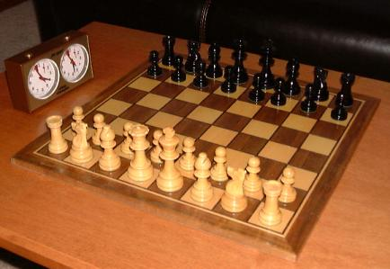

Содержание: Фигуры | Ценность фигур | Конец партии
Фигуры

В начале игры у каждого игрока 16 фигур. Вот как они ходят:
- Король - на одну клетку в любую сторону
- Ферзь - в любую сторону на сколько угодно клеток
- Ладья - по прямой (вперед, назад, вбок)
- Слон - по диагонали
- Конь - буквой "Г", может перепрыгивать фигуры
- Пешка - на одну клетку вперед, первым ходом можно на две, бьет по диагонали
Есть еще особые ходы: рокировка (король и ладья ходят одновременно) и превращение пешки, когда она доходит до конца доски.
Ценность фигур
| Фигура | Количество | Ценность (в пешках) |
|---|---|---|
| Пешка | 8 | 1 |
| Конь | 2 | 3 |
| Слон | 2 | 3 |
| Ладья | 2 | 5 |
| Ферзь | 1 | 9 |
| Король | 1 | - |
Конец партии
- Мат - игрок, который поставил мат, побеждает
- Сдача - игрок сам признает поражение
- Пат - ходить некуда, но шаха нет, это ничья
- Ничья по договоренности
Подробнее можно прочитать на Википедии.